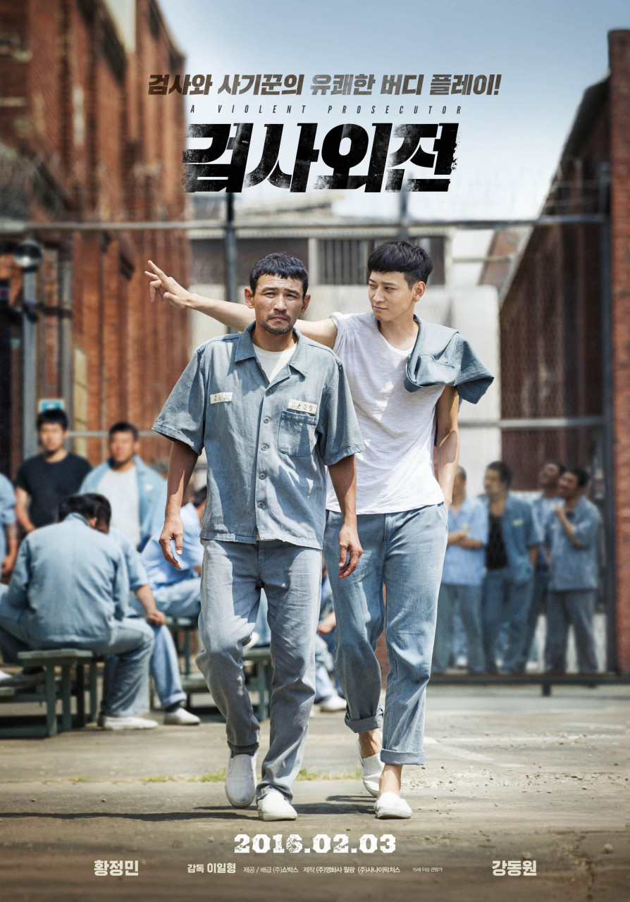

검사외전

진실 앞에 무대뽀! 다혈질 검사, 살인 누명을 쓰고 감옥에 갇히다! 거친 수사 방식으로 유명한 다혈질 검사 ‘변재욱’(황정민). 취조 중이던 피의자가 변사체로 발견 되면서 살인 혐의로 체포된다. 꼼짝없이 살인 누명을 쓰게 된 '변재욱'은 결국 15년 형을 받고 수감 된다. 진실 따위 나 몰라라! 허세남발 꽃미남 사기꾼, 반격 작전에 선수로 기용되다! 감옥에서 복수의 칼을 갈던 재욱. 5년 후, 자신이 누명을 쓰게 된 사건에 대해 알고 있는 허세남발 꽃미남 사기꾼 ‘치원’(강동원)을 우연히 만나게 되고, 그 순간 감옥 밖 작전을 대행해 줄 선수임을 직감한다. 검사 노하우를 총 동원, 치원을 무혐의로 내보내고 반격을 준비하는 재욱. 하지만 자유를 얻은 치원은 재욱에게서 벗어날 기회만 호시탐탐 노리는데… 감옥에 갇힌 검사와 세상 밖으로 나온 사기꾼! 이들의 예측불허, 반격의 한탕은 성공할 수 있을까?